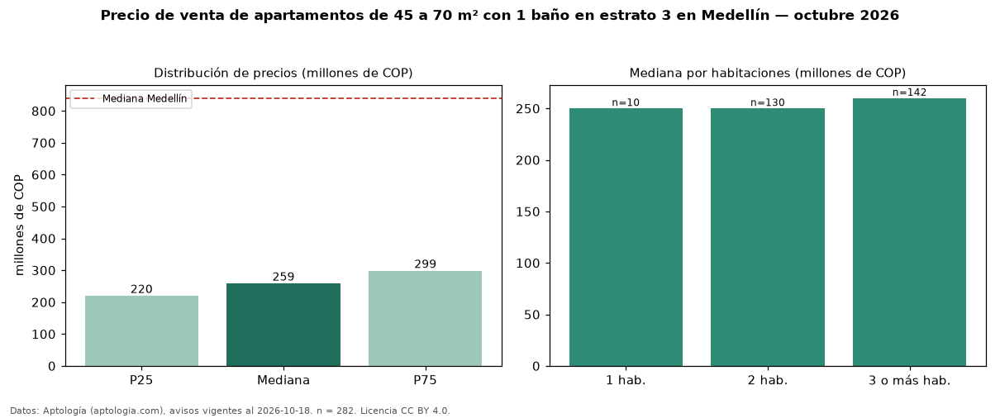

Precio de venta de apartamentos de 45 a 70 m² con 1 baño en estrato 3 en Medellín — octubre 2026
Con 282 avisos vigentes, el precio mediano de apartamentos de 45 a 70 m² con 1 baño en estrato 3 en venta en Medellín es COP 259 millones. Frente a la mediana de los apartamentos de 45 a 70 m² en estrato 3 en venta de Medellín (COP 295 millones, n = 904), queda 12 % por debajo; este segmento reúne el 31 % de esos avisos. Por metro cuadrado, la mediana es COP 4,95 millones/m² (n = 282), 8 % por debajo de los apartamentos de 45 a 70 m² en estrato 3 en venta de Medellín (COP 5,40 millones/m²). El área mediana anunciada es 50 m². El segmento con más oferta es el de 3 o más habitaciones (142 avisos, mediana COP 260 millones); pasar de 1 habitación a 3 o más habitaciones cambia la mediana +4 %. La administración mediana declarada es COP 188.500 al mes (n = 128). La mediana de todos los apartamentos en venta de Medellín es COP 840 millones (−69 % de diferencia). 29 % de los avisos con el dato declara parqueadero. Datos: Aptología (aptologia.com), CC BY 4.0 — https://www.aptologia.com/venta/medellin. Archivos: PDF, CSV con las cifras y gráfica PNG.

| Avisos únicos | 282 |
|---|---|
| Percentil 25 | COP 220.250.000 |
| Mediana | COP 259.000.000 |
| Percentil 75 | COP 298.750.000 |
| Mediana por m² | COP 4.954.513 |
Fuente: avisos vigentes de portales inmobiliarios recopilados por Aptología, deduplicados (mínimo 30 avisos únicos por celda). Precios pedidos, no cerrados. Fecha: 2026-10-18.